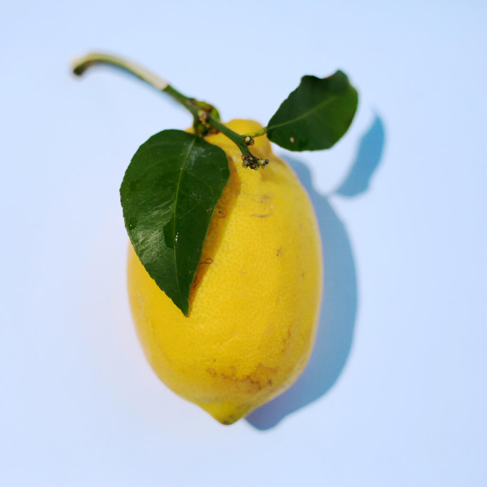

Vitamin C atau dalam kimia disebut asam askorbat mempunyai bentuk berupa bubuk kristal berwarna kuning keputihan. Sifat vitamin C yaitu dapat larut dalam air dan memiliki sifat antioksidan.
Antioksidan berasal dari kata anti (melawan) dan oksidan (oksidasi). Antioksidan adalah molekul yang dapat mencegah radikal bebas akibat adanya reaksi oksidasi.
Radikal bebas sangat berbahaya apabila berkeliaran di dalam tubuh kita. Memang, tubuh kita dapat menghilangkan radikal bebas dengan sendirinya. Akan tetapi, tubuh pun dapat kewalahan apabila terlalu banyak radikal bebas yang berkeliaran, belum lagi aktivitas seperti merokok dapat mengurangi kinerja tubuh kita. Akibatnya DNA tubuh yang terpapar radikal bebas akan mengalami mutasi.
Walaupun kita tidak merasakan adanya keganjilan apapun. Namun, apabila aktivitas seperti merokok dan kurangnya asupan antioksidan seperti vitamin C terus berlangsung, maka jangan heran ketika kalian tiba-tiba dikagetkan dengan penyakit kanker yang bersarang di dalam tubuh.
Asupan Vitamin C
Untuk mendapatkan asupan vitamin C, kita sebagai warga negara Indonesia yang baik hati dan tidak sombong harus bersyukur, sebab di Indonesia kita sudah dilimpahkan kekayaan berupa keanekaragaman buah-buahan dan sayur-sayuran. Berikut buah serta sayur yang sering kita jumpai dan memiliki vitamin C yang tinggi.
Jeruk
Buah ini memiliki rasa asam ketika dimakan. Setelah diteliti, teryata buah jeruk mengandung asam askorbat atau yang biasa kita kenal vitamin C.
Setiap 100 g jeruk mengandung 53,2 mg vitamin C, data ini memang tidak sepenuhnya valid karena kandungan vitamin C dalam jeruk bisa berbeda-beda tergantung dari faktor eksternal dan internal tanaman jeruk.
Meskipun begitu, buah jeruk begitu identik dengan vitamin C karena kandungan vitamin C yang tergolong cukup tinggi.
Lemon
Siapa sih yang tidak kenal dengan buah satu ini. Betul, Lemon. Dengan rasanya yang begitu asam sampai-sampai dijadikan ajang challange di TikTok.
 Lemon ketika dibuat jus terus ditambah gula serta es batu rasanya seperti anda menjadi ironman.Dalam satu gelas air lemon diperkirakan mengandung vitamin C sebesar 18,6 mg.
Brokoli
Brokoli adalah sayuran berbentuk seperti payung berwarna hijau. Brokoli memiliki kandungan vitamin C yang tinggi. Terdapat 51 mg vitamin C dalam satu buah cangkir brokoli. Sayuran ini biasanya dihidangkan dengan cara direbus atau dikukus.
Cabai
Bagi pemuja seblak, cabai merupakan komponen terpenting dalam menyantap seblak. Pasalnya cabai memberikan rasa pedas yang begitu nikmat. Cabai mengandung capsaicin yang memberikan rasa pedas pada cabai. Selain capsaicin, ternyata cabai mengandung vitamin C juga. Dalam satu cabai merah mengandung 65 mg vitamin C.